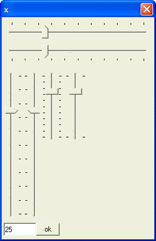

{TRACKBAR}
Syntax
{TRACKBAR =%T= Tickmarks ;E= Increments [ ;L= Low ][ ;H= High ] % Width, Height Variable_Name }
|
Argument |
Type |
Description |
|
Tickmarks |
C |
Sets the style of the tickmarks. Allowable values are:
|
|
Increments |
N |
The frequency of tickmarks. Allowable values are:
|
|
Low |
N |
Optional. Default = 0. The lowest possible value. |
|
High |
N |
Optional. Default = 100. The highest possible value. |
|
Width |
N |
The width of the control in characters, by default based on Arial 8 point. |
|
Height |
N |
The height of the control in lines, by default based on Arial 8 point. |
|
Variable_Name |
C |
A variable or expression that evaluates to a number. |
Description
The {TRACKBAR} command puts a trackbar control on an Xdialog.
Limitations
Desktop applications only
Example
The following example shows various styles of trackbar controls. Picture
{kind=link}
|
num = 0 ui_dlg_box("x",<<%dlg% {trackbar=%T=T;E=10%50,3num}; {trackbar=%T=B;E=10%50,3num}; {trackbar=%T=R;E=10%6,20num}{trackbar=%T=L;E=10%6,20num} {trackbar=%T=A;E=10%8,10num}{trackbar=%T=E;E=10%8,10num}; %dlg%) '%% options for trackbars tickmarks ' 'T=T - ticks along top 'T=B - ticks along bottom 'T=L - ticks along left 'T=R - ticks along right 'T=A - Ticks on both sides 'T=E - ticks on endpoints only ' 'Each tickmark increment is set by the E option ' 'E=1 means 1 tick mark for every unit 'E=10 means 1 tick mark for every 10 units ' 'Other settings - reset Low and High points -(default to 0 and 100) ' 'L=Low point 'H=High point |

See Also